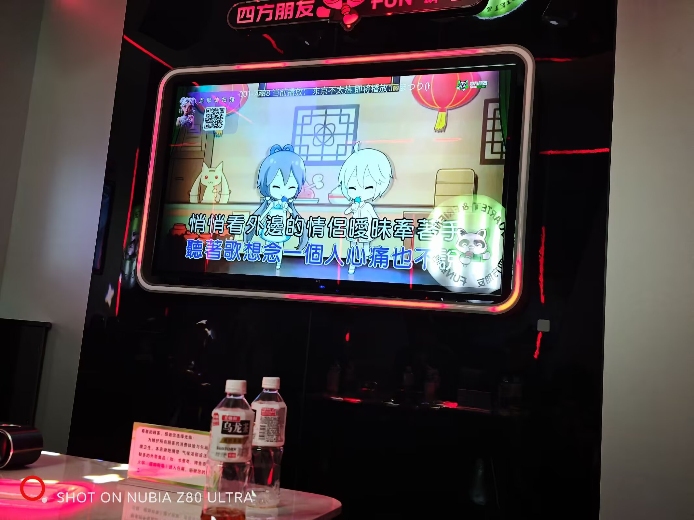
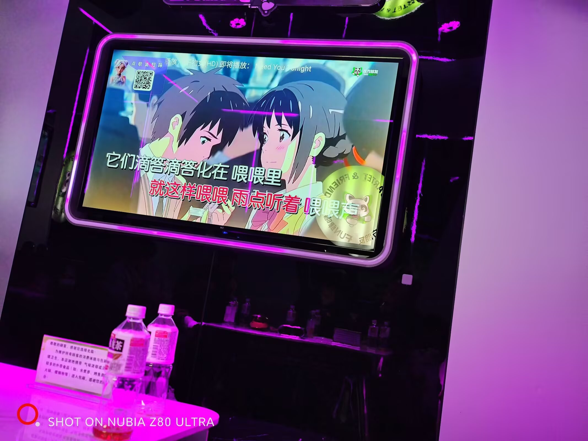

学习day30：春节中
今天睡到中午，下午吃完饭刷手机随手看了一些前沿的AI信息，不算学习。然后四五点去福安了，和初中同学吃四川火锅吃到了八点多，挺好吃的，25年6月从成都毕业之后就没吃过了，好吃的甚至有些怀念以前在成都的日子。 然后去找地方第二场，结果没提前订，麻将桌都找不到一张，全被拿完了。最后没招了一群人去把飞驰人生3看完，老实说电影拍得很垃圾，但是一群人看的话，有些包袱还是可以笑一笑的。 看完去了KTV，一群人唱歌唱到2点半，其间有朋友点了好几首ACG老歌（相对于现在的年纪，已经都是十年以上的了），这些歌不像零几年杰伦和孙燕姿那些传唱了二十多年仍然热门。它在感官上有着强烈的年代感，仔细想想我也正好是十年前的那段时间上的初中，认识的这群朋友。 半夜真是很容易emo，想到这大半个月的学习日子的AI知识，情感和理性莫名其妙发生了一些挺矛盾的冲突，在吵闹的KTV里部分地陷入到了无意义的哲学思考中去。


唱完歌之后去了网吧，玩了一会儿海克斯乱斗，然后跑去玩三角洲大战场，不得不说大战场是一个很适合边闲聊边玩的模式。 早上本来要吃个拌面炖罐再回家睡的，奈何最好吃那家过年没开，于是直接回家洗洗睡了。